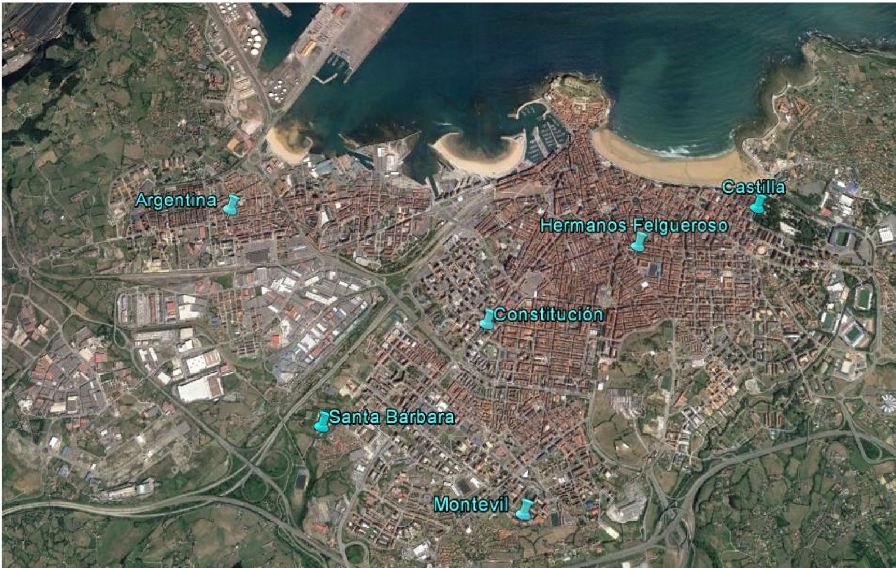

3 The Data
I gathered the data used in this project from the open data web portal of the town hall of Gijón https://transparencia.gijon.es/. The data can be downloaded from here:
I downloaded 18 csv files with air pollution and weather data of Gijón from years 2000 to 2017. I saved them in the “data” folder. I downloaded two more files from this web, a csv file with the description of the variables and another csv file with information about the measurement stations.

Image source: “Informe de calidad del aire del Principado de Asturias (2016)”.